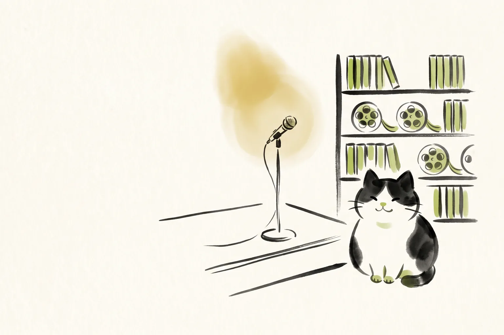
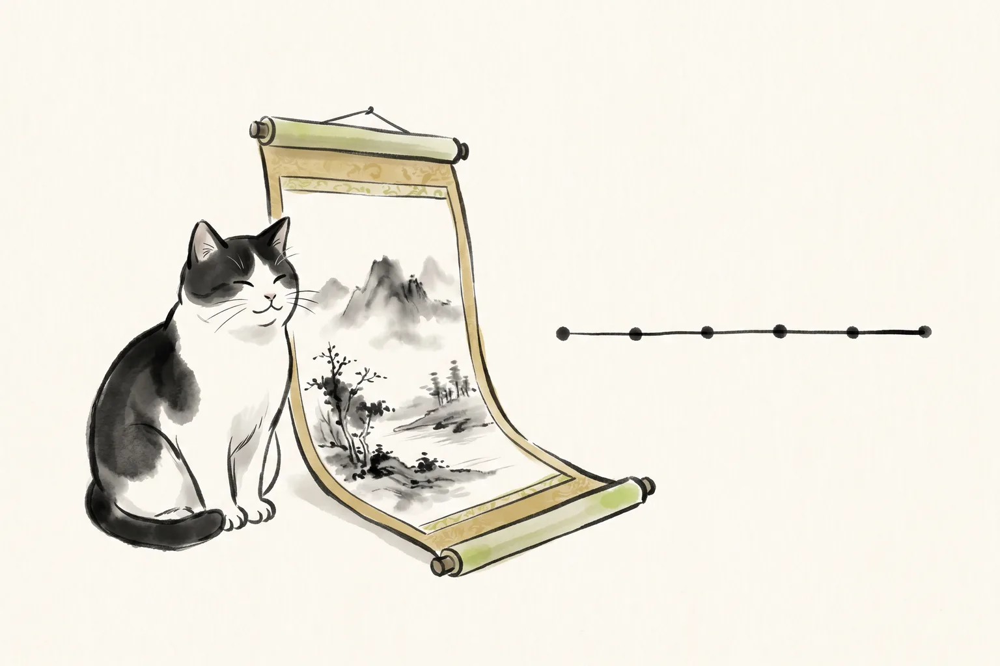

ホーム ＞ 詩吟を始める完全ガイド
① 詩吟とは
詩吟とは、漢詩や和歌などに独特の節をつけて、声高らかに吟じる日本の伝統芸能です。おなかの底から声を出すため、姿勢や呼吸が整い、健康づくりにも良いと言われています。
年齢を問わず始められるのも、詩吟の大きな魅力です。学生の方からシニアの方まで、幅広い世代の方が全国の教室で学んでいます。難しい決まりごとから入る必要はありません。まずは「声を出してみる」ことから始めてみましょう。
詩吟には多くの流派があり、同じ漢詩でも流派によって節の付け方が少しずつ異なります。最初のうちから流派を意識する必要はなく、教室を選ぶときの目安のひとつ、くらいに考えておけば大丈夫です。

② まず「よい吟」を聴いてみよう
詩吟を始める前に、まずは「よい吟」をたくさん聴いてみることをおすすめします。実際の声や節回しを耳で覚えることは、どんな教科書よりも上達の近道になります。
YouTubeにも、詩吟をわかりやすく紹介している動画がたくさんあります。当サイトでは、実力派の吟士による動画を吟士別・所属別・漢詩別に整理した「実力派吟士アーカイブス」を用意していますので、気になる漢詩や吟士から探してみてください。
「かっこいいな」「こんな声を出してみたいな」と思える吟に出会えたら、それがあなたにとっての詩吟の入口になります。
③ 学び方を選ぼう
詩吟の学び方には、大きく分けて「教室に通って学ぶ」方法と「オンラインで学ぶ」方法があります。どちらが良い・悪いということはなく、ご自身の生活スタイルに合わせて選んでいただければ大丈夫です。
教室で学ぶ
近くに教室があれば、先生から直接指導を受けられます。仲間と一緒に練習できるのも、教室ならではの楽しさです。まずは全国の教室情報をまとめたマップから、近くの教室を探してみましょう。
④ 最初の練習
腹式呼吸の大切さ
詩吟でよく言われるのが「腹式呼吸」の大切さです。おなかを使って息を支えることで、声が安定し、長く伸びやかな節も吟じやすくなります。腹式呼吸は詩吟だけでなく、日常の声にも自信を持てるようになると言われています。
腹式呼吸のやり方をじっくり学びたい方は、Kindle書籍『自分の声に自信が持てる!!本当の腹式呼吸』もあわせてご覧ください。
詩吟の教科書シリーズから選ぶ
もっと体系的に学びたい方には、Kindleの「詩吟の教科書」シリーズもおすすめです。今のご自身に近いものを選んでみてください。
このページにはアフィリエイトリンクが含まれます。
録音してみる
練習を始めたら、ぜひ自分の声を録音してみましょう。歌と同じで、自分の吟は自分ではなかなか客観的に聴けないものです。録音して聴き返すことで、次に直すところが見えてきます。
吟猫ピッチマップを使うと、録音した吟の音の動きを目で見て確かめられます。感覚だけに頼らず、練習の助けにしてみてください。

⑤ 漢詩に親しむ
詩吟は、漢詩や和歌に節をつけて吟じるものなので、題材となる漢詩を知ることも大きな楽しみのひとつです。作者がどんな時代に生き、どんな思いでその詩を詠んだのかを知ると、同じ吟でも聴こえ方が変わってきます。
漢詩の図書館では、詩吟でよく使われる漢詩について、作者や時代背景、豆知識などを調べられるよう整理を進めています。好きな漢詩がひとつ見つかると、詩吟がぐっと身近なものになりますよ。
⑥ 続けるコツ
詩吟に限らず、何かを続けるいちばんのコツは「小さく始めて、無理をしないこと」です。毎日少しずつ声を出す、週に1回教室に通う、月に1本動画を見る。それだけでも、十分に続けていくことができます。
「何から手をつければいいか、順番に教えてほしい」という方には、初心者向けの7日間講座がおすすめです。詩吟の始め方を、毎日1通ずつお届けします。
また、同じように詩吟を楽しむ仲間と出会いたい方は、コミュニティもご利用ください。ひとりで頑張るよりも、誰かと一緒のほうが、きっと続けやすくなります。
よくある質問
詩吟とは何ですか？
詩吟とは、漢詩や和歌などに節をつけて声高らかに吟じる、日本の伝統芸能です。おなかの底から声を出すため、姿勢や呼吸が整い、健康にも良いと言われています。年齢を問わず始められ、全国に多くの教室があります。
詩吟初心者は何から始めればいいですか？
まずは「よい吟」をたくさん聴いて、詩吟がどんなものかを知ることから始めてみましょう。声を出したくなったら、教室に通うかオンラインで学ぶかを選び、腹式呼吸を意識しながら少しずつ練習していくのがおすすめです。このページの流れどおりに進めていただければ大丈夫です。
詩吟の流派とは何ですか？
流派とは、詩吟の節回しや発声の型を受け継ぐグループのことです。全国には多くの流派があり、同じ漢詩でも流派によって節の付け方が少しずつ異なります。教室を選ぶときの目安のひとつですが、最初から厳密に選ぶ必要はありません。
詩吟を始めるのにお金はどれくらいかかりますか？
教室によって、入会金や月謝、教材費などの金額はさまざまです。まずは体験レッスンなどで雰囲気を確かめてから、費用についても教室に直接確認してみることをおすすめします。オンライン教室や無料ツールから始めれば、費用をかけずに詩吟に触れることもできます。
何歳からでも始められますか？
はい、詩吟は年齢を問わず始められる趣味です。学生の方からシニアの方まで、幅広い世代が全国の教室で学んでいます。おなかから声を出す練習は、健康づくりにもつながると言われています。
最終更新日: 2026年7月11日
運営: heyhey｜YouTube「詩吟ちゃんねる」運営・詩吟歴25年以上・2018年全国コンクール優勝